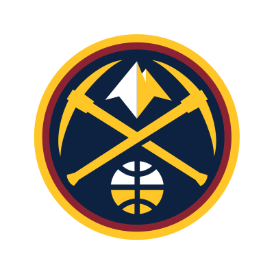
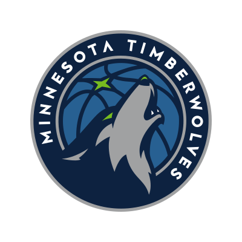
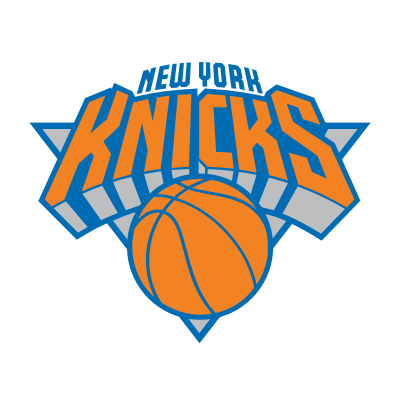
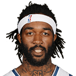
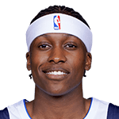

I'm guessing you are a fan of the undefined?
Not your jam? Try another:
The All Could've Been Squads
ATL 
- In 2005, #2 Marvin Williams could've been #4 Chris Paul
- In 2006, #5 Shelden Williams could've been #24 Kyle Lowry
- In 1990, #10 Rumeal Robinson could've been #29 Toni Kukoč
- In 2000, #6 DerMarr Johnson could've been #16 Hedo Türkoğlu
- In 2004, #6 Josh Childress could've been #9 Andre Iguodala
BOS 
- In 1997, #6 Ron Mercer could've been #9 Tracy McGrady
- In 1994, #9 Eric Montross could've been #10 Eddie Jones
- In 1996, #6 Antoine Walker could've been #13 Kobe Bryant
- In 2006, #7 Randy Foye could've been #24 Kyle Lowry
- In 2014,
 #6
Marcus Smart
could've been
#41
Nikola Jokić
#6
Marcus Smart
could've been
#41
Nikola Jokić
BRK 
- In 1997, #7 Tim Thomas could've been #9 Tracy McGrady
- In 1995, #9 Ed O'Bannon could've been #21 Michael Finley
- In 1996, #8 Kerry Kittles could've been #13 Kobe Bryant
- In 2001, #7 Eddie Griffin could've been #31 Gilbert Arenas
- In 2010, #3 Derrick Favors could've been #10 Paul George
CHA 
- In 2006, #3 Adam Morrison could've been #24 Kyle Lowry
- In 1989, #5 J.R. Reid could've been #12 Mookie Blaylock
- In 2014, #9 Noah Vonleh could've been #41 Nikola Jokić
- In 2013, #4 Cody Zeller could've been #15 Giannis Antetokounmpo
- In 2012, #2 Michael Kidd-Gilchrist could've been #6 Damian Lillard
CHI 
- In 1989, #6 Stacey King could've been #12 Mookie Blaylock
- In 2002,
#2
Jay Williams
could've been
 #9
Amar'e Stoudemire
#9
Amar'e Stoudemire
- In 2001, #4 Eddy Curry could've been #31 Gilbert Arenas
- In 2000, #4 Marcus Fizer could've been #16 Hedo Türkoğlu
- In 2008, #1 Derrick Rose could've been #4 Russell Westbrook
CLE 
- In 2013, #1 Anthony Bennett could've been #15 Giannis Antetokounmpo
- In 2012, #4 Dion Waiters could've been #6 Damian Lillard
- In 2004, #10 Luke Jackson could've been #17 Josh Smith
- In 2014, #1 Andrew Wiggins could've been #41 Nikola Jokić
- In 2002,
#6
Dajuan Wagner
could've been
#9
Amar'e Stoudemire
DAL 
- In 1998, #6 Robert Traylor could've been #9 Dirk Nowitzki
- In 1996,
 #9
Samaki Walker
could've been
#13
Kobe Bryant
#9
Samaki Walker
could've been
#13
Kobe Bryant
- In 1989, #8 Randy White could've been #12 Mookie Blaylock
- In 1991, #6 Doug Smith could've been #11 Terrell Brandon
- In 2017,
#9
Dennis Smith Jr.
could've been
 #13
Donovan Mitchell
#13
Donovan Mitchell
DEN 
- In 1998, #3 Raef LaFrentz could've been #9 Dirk Nowitzki
- In 1997, #5 Tony Battie could've been #9 Tracy McGrady
- In 1991, #8 Mark Macon could've been #11 Terrell Brandon
- In 2002,
#5
Nikoloz Tskitishvili
could've been
#9
Amar'e Stoudemire
- In 2003, #3 Carmelo Anthony could've been #5 Dwyane Wade
DET 
- In 2003, #2 Darko Miličić could've been #5 Dwyane Wade
- In 2011, #8 Brandon Knight could've been #15 Kawhi Leonard
- In 2001, #9 Rodney White could've been #31 Gilbert Arenas
- In 2013, #8 Kentavious Caldwell-Pope could've been #15 Giannis Antetokounmpo
- In 2010, #7 Greg Monroe could've been #10 Paul George
GSW 
- In 1995, #1 Joe Smith could've been #5 Kevin Garnett
- In 2006, #9 Patrick O'Bryant could've been #24 Kyle Lowry
- In 1997,
 #8
Adonal Foyle
could've been
#9
Tracy McGrady
#8
Adonal Foyle
could've been
#9
Tracy McGrady
- In 2010, #6 Ekpe Udoh could've been #10 Paul George
- In 2012, #7 Harrison Barnes could've been #35 Draymond Green
HOU 
- In 2006, #8 Rudy Gay could've been #24 Kyle Lowry
- In 2000, #9 Joel Przybilla could've been #16 Hedo Türkoğlu
- In 2002,
#1
Yao Ming
could've been
#9
Amar'e Stoudemire
- In 2012, #16 Royce White could've been #35 Draymond Green
- In 1998, #18 Mirsad Türkcan could've been #32 Rashard Lewis
IND 
- In 1996, #10 Erick Dampier could've been #13 Kobe Bryant
- In 1989, #7 George McCloud could've been #12 Mookie Blaylock
- In 2006, #17 Shawne Williams could've been #24 Kyle Lowry
- In 1993, #14 Scott Haskin could've been #24 Sam Cassell
- In 2008,
#11
Jerryd Bayless
could've been
 #35
DeAndre Jordan
#35
DeAndre Jordan
LAC 
- In 1998, #1 Michael Olowokandi could've been #9 Dirk Nowitzki
- In 1996,
 #7
Lorenzen Wright
could've been
#13
Kobe Bryant
#7
Lorenzen Wright
could've been
#13
Kobe Bryant
- In 1995, #2 Antonio McDyess could've been #5 Kevin Garnett
- In 1989, #2 Danny Ferry could've been #12 Mookie Blaylock
- In 1994, #7 Lamond Murray could've been #10 Eddie Jones
LAL 
- In 2014, #7 Julius Randle could've been #41 Nikola Jokić
- In 2017, #2 Lonzo Ball could've been #3 Jayson Tatum
- In 2015, #2 D'Angelo Russell could've been #32 Montrezl Harrell
- In 2016, #2 Brandon Ingram could've been #11 Domantas Sabonis
- In 2005,
#10
Andrew Bynum
could've been
 #17
Danny Granger
#17
Danny Granger
MEM 
- In 2009, #2 Hasheem Thabeet could've been #7 Stephen Curry
- In 1997, #4 Antonio Daniels could've been #9 Tracy McGrady
- In 1998, #2 Mike Bibby could've been #9 Dirk Nowitzki
- In 1996, #3 Shareef Abdur-Rahim could've been #13 Kobe Bryant
- In 1995, #6 Bryant Reeves could've been #21 Michael Finley
MIA 
- In 2008, #2 Michael Beasley could've been #4 Russell Westbrook
- In 1990, #9 Willie Burton could've been #29 Toni Kukoč
- In 1989, #4 Glen Rice could've been #12 Mookie Blaylock
- In 1995, #10 Kurt Thomas could've been #21 Michael Finley
- In 2015, #10 Justise Winslow could've been #32 Montrezl Harrell
MIL 
- In 2011, #10 Jimmer Fredette could've been #15 Kawhi Leonard
- In 2005, #1 Andrew Bogut could've been #4 Chris Paul
- In 2008,
#8
Joe Alexander
could've been
#35
DeAndre Jordan
- In 2014, #2 Jabari Parker could've been #41 Nikola Jokić
- In 2007, #6 Yi Jianlian could've been #48 Marc Gasol
MIN 
- In 2009, #6 Jonny Flynn could've been #7 Stephen Curry
- In 2011, #2 Derrick Williams could've been #15 Kawhi Leonard
- In 2009, #5 Ricky Rubio could've been #7 Stephen Curry
- In 2008, #3 O.J. Mayo could've been #4 Russell Westbrook
- In 2013,
 #9
Trey Burke
could've been
#15
Giannis Antetokounmpo
#9
Trey Burke
could've been
#15
Giannis Antetokounmpo
NOP 
- In 2012,
 #10
Austin Rivers
could've been
#35
Draymond Green
#10
Austin Rivers
could've been
#35
Draymond Green
- In 2013, #6 Nerlens Noel could've been #15 Giannis Antetokounmpo
- In 2016, #6 Buddy Hield could've been #11 Domantas Sabonis
- In 2006, #15 Cedric Simmons could've been #24 Kyle Lowry
- In 2006, #12 Hilton Armstrong could've been #24 Kyle Lowry
NYK 
- In 2003, #9 Mike Sweetney could've been #18 David West
- In 2009,  #8 Jordan Hill could've been #17 Jrue Holiday
- In 2017,

#8
Frank Ntilikina
could've been
#13
Donovan Mitchell
- In 2008,
 #6
Danilo Gallinari
could've been
#35
DeAndre Jordan
#6
Danilo Gallinari
could've been
#35
DeAndre Jordan
- In 2005,
 #8
Channing Frye
could've been
#17
Danny Granger
#8
Channing Frye
could've been
#17
Danny Granger
OKC 
- In 2006, #10 Mouhamed Sene could've been #24 Kyle Lowry
- In 2009, #3 James Harden could've been #7 Stephen Curry
- In 2004, #12 Robert Swift could've been #17 Josh Smith
- In 1991, #14 Rich King could've been #21 Eric Murdock
- In 1999, #13 Corey Maggette could've been #57 Manu Ginóbili
ORL 
- In 2014, #4 Aaron Gordon could've been #41 Nikola Jokić
- In 2013, #2 Victor Oladipo could've been #15 Giannis Antetokounmpo
- In 1991, #10 Bison Dele could've been #11 Terrell Brandon
- In 2000, #10 Keyon Dooling could've been #16 Hedo Türkoğlu
- In 2015, #5 Mario Hezonja could've been #32 Montrezl Harrell
PHI 
- In 1995, #3 Jerry Stackhouse could've been #5 Kevin Garnett
- In 1998, #8 Larry Hughes could've been #9 Dirk Nowitzki
- In 1994, #6 Sharone Wright could've been #10 Eddie Jones
- In 2010, #2 Evan Turner could've been #10 Paul George
- In 1997, #2 Keith Van Horn could've been #9 Tracy McGrady
PHO 
- In 2013, #5 Alex Len could've been #15 Giannis Antetokounmpo
- In 2017,
#4
Josh Jackson
could've been
#13
Donovan Mitchell
- In 2016, #4 Dragan Bender could've been #11 Domantas Sabonis
- In 2004, #7 Luol Deng could've been #9 Andre Iguodala
- In 2014, #18 Tyler Ennis could've been #41 Nikola Jokić
POR 
- In 2007, #1 Greg Oden could've been #2 Kevin Durant
- In 2006, #4 Tyrus Thomas could've been #24 Kyle Lowry
- In 1995, #8 Shawn Respert could've been #21 Michael Finley
- In 2013, #10 CJ McCollum could've been #15 Giannis Antetokounmpo
- In 2005,
 #6
Martell Webster
could've been
#17
Danny Granger
#6
Martell Webster
could've been
#17
Danny Granger
SAC 
- In 2009, #4 Tyreke Evans could've been #7 Stephen Curry
- In 1998, #7 Jason Williams could've been #9 Dirk Nowitzki
- In 2014, #8 Nik Stauskas could've been #41 Nikola Jokić
- In 2012, #5 Thomas Robinson could've been #6 Damian Lillard
- In 2013, #7 Ben McLemore could've been #15 Giannis Antetokounmpo
SAS 
- In 1989, #3 Sean Elliott could've been #12 Mookie Blaylock
- In 2010,
 #20
James Anderson
could've been
#33
Hassan Whiteside
#20
James Anderson
could've been
#33
Hassan Whiteside
- In 1992, #18 Tracy Murray could've been #24 Latrell Sprewell
- In 1999, #29 Leon Smith could've been #57 Manu Ginóbili
- In 1998, #24 Felipe López could've been #32 Rashard Lewis
TOR 
- In 1999, #5 Jonathan Bender could've been #9 Shawn Marion
- In 2004, #8 Rafael Araújo could've been #9 Andre Iguodala
- In 2006, #1 Andrea Bargnani could've been #24 Kyle Lowry
- In 1998, #4 Antawn Jamison could've been #9 Dirk Nowitzki
- In 2012, #8 Terrence Ross could've been #35 Draymond Green
UTA 
- In 2014, #5 Dante Exum could've been #41 Nikola Jokić
- In 2011, #3 Enes Freedom could've been #15 Kawhi Leonard
- In 2005, #3 Deron Williams could've been #4 Chris Paul
- In 2010, #9 Gordon Hayward could've been #10 Paul George
- In 1999, #19 Quincy Lewis could've been #57 Manu Ginóbili
WAS 
- In 2011, #6 Jan Veselý could've been #15 Kawhi Leonard
- In 1989, #9 Tom Hammonds could've been #12 Mookie Blaylock
- In 2001, #1 Kwame Brown could've been #3 Pau Gasol
- In 1995, #4 Rasheed Wallace could've been #5 Kevin Garnett
- In 1994, #5 Juwan Howard could've been #10 Eddie Jones